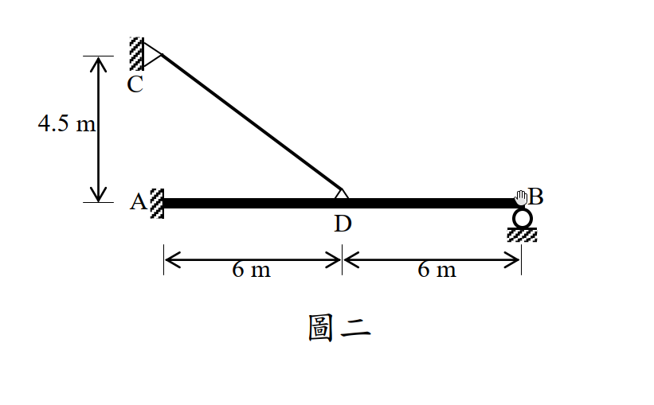

考題編號：SA-2014-2
主分類： SA-U2-2 靜不定結構諧合變位
副分類： SA-U2-1
分析法： 諧合變位法
標籤： 諧合變位法 複合結構 最大彎矩 彈性變形
1. 原始題目重述 (Problem Restatement)
如圖二所示之複合結構，AB 構件為梁結構，A 點為固接支承，B 點為滾支承；而 CD 構件為軸力桿件，C 點為鉸支承，且 D 點與梁交接處為外部鉸接。
另外，AB 構件之彈性模數與慣性矩乘積為 $EI_{AB} = 10000 \text{ kN-m}^2$，而 CD 構件之彈性模數與斷面積乘積為 $EA_{CD} = 40000 \text{ kN}$。
請以諧合變位法計算當 AB 構件承受垂直向下均佈載重 $8 \text{ kN/m}$ 時之最大彎矩（絕對值最大者）及其發生處。（若以其他方法計算不予計分）（25 分）

圖說：AB 梁跨度 12m，A 點固接，B 點滾支承。D 點位於 AB 中點（距 A 點 6m，距 B 點 6m）。CD 為垂直軸力桿件，長度 4.5m，C 點鉸接於上方，D 點鉸接於 AB 梁上。AB 梁承受向下均佈載重 8 kN/m。
2. 考題核心精神與出題者意圖 (Core Concepts & Examiner's Intent)
本題測驗考生對於多重靜不定複合結構的分析能力，特別是指定使用「諧合變位法（柔度法 / 單位力法）」。
- 靜不定度判斷與多餘力選擇：AB 梁有固接與滾支承，加上 CD 桿的彈性支撐，整體為二次靜不定。選擇適當的多餘力（例如 B 點垂直反力與 CD 桿軸力）是解題第一步。
- 彈性支承的變形諧合：CD 桿件並非剛性支承，其軸向變形（伸長量）必須與梁 D 點的向下撓度相等，這是一個經典的彈性諧合條件（$v_D = \Delta_{CD}$）。
- 極值判斷：求解出所有反力後，必須寫出剪力方程式尋找剪力為零的點，才能正確比較各區段的極大彎矩以及端點彎矩，找出絕對值最大者。
3. 解題戰略地圖與陷阱分析 (Strategic Roadmap & Trap Analysis)
解題策略：
- 設定基本系統與多餘力：移除 B 點滾支承與 CD 桿件的支撐，將原結構退化為懸臂梁（A 點固接，自由端為 B）的基本系統。選擇 B 點向上反力 $R_B$ ($X_2$) 與 CD 桿件的向上拉力 $F_{CD}$ ($X_1$) 作為兩個多餘力。
- 計算基本變位（載重造成）：計算懸臂梁在 8 kN/m 均佈載重下，D 點與 B 點的向下撓度 $\Delta_{D0}$ 與 $\Delta_{B0}$。
- 計算柔度係數（單位力造成）：分別在 D 點與 B 點施加單位向上力，求出 $f_{11}, f_{21}, f_{12}, f_{22}$。
- 建立諧合方程式：
- B 點滾支承，最終位移為 0：$\Delta_{B0} - f_{21} X_1 - f_{22} X_2 = 0$
- D 點與 CD 桿相連，最終向下位移等於 CD 桿的伸長量：$\Delta_{D0} - f_{11} X_1 - f_{12} X_2 = \frac{X_1 L_{CD}}{EA_{CD}}$ - 求解與繪製彎矩圖：解出 $X_1, X_2$ 後，求出 A 點反力，並找出 AB 梁上剪力為零的位置，計算各極大彎矩與端點彎矩，比較求得絕對值最大者。
陷阱分析：
- CD 桿變形的符號：若定義向下位移為正，則 $X_1$（CD 桿對梁的向上拉力）為正時，CD 桿受拉力而伸長，因此 D 點最終應有向下位移量 $\delta = \frac{X_1 L}{EA}$。若此處正負號或觀念顛倒，方程式將完全錯誤。
- 單位一致性：$EI$ 與 $EA$ 的數值巨大，建議保留 $EI$ 符號進行推導，最後再代入 $\frac{L_{CD}}{EA_{CD}} = \frac{4.5}{40000} = \frac{1.125}{10000} = \frac{1.125}{EI}$ 來簡化計算，避免小數點錯誤。
3.5 變數層次分析 (Variable Hierarchy Analysis)
複習提示：第一次解題後，在每個卡住的知識點旁標記
⚠；第二次複習時只看有⚠的項目。
最終目標
利用諧合變位法求出 CD 桿軸力與 B 點反力，進而找出梁 AB 上絕對值最大的彎矩及其位置。
本題關鍵公式（依計算順序）
$\boxed{\cdot}$ = 需由前步驟推導，非題目直接給定的變數
$$\text{Step 1: } \Delta_{D0} - f_{11} X_1 - f_{12} X_2 = \frac{X_1 L_{CD}}{EA_{CD}}$$
$$\text{Step 2: } \Delta_{B0} - f_{21} X_1 - f_{22} X_2 = 0$$
$$\text{Step 3: } V(x) = 0 \Rightarrow \text{ 尋找局部最大彎矩位置 } x$$
$$\text{Step 4: } M_{max} = \max(|M_A|, |M_D|, |M(x_{V=0})|)$$
L1：題目直接給定
看到題目就能讀出的數字，不需要任何公式。
| 符號 | 數值 | 說明 |
|---|---|---|
| $w$ | 8 kN/m | AB 梁均佈載重 |
| $L_{AB}$ | 12 m | AB 梁長 |
| $L_{AD}$ | 6 m | A 到 D 距離 |
| $L_{CD}$ | 4.5 m | CD 桿長度 |
| $EI_{AB}$ | $10000$ | 梁彈性模數與慣性矩乘積 |
| $EA_{CD}$ | $40000$ | 桿彈性模數與斷面積乘積 |
L2：需知識點推導
需要知道公式名稱與適用條件，套入 L1 即可算出。
懸臂梁受均佈載重之變位 (向下為正)
| 符號 | 公式/來源 | 卡關? |
|---|---|---|
| $\Delta_{D0}$ | $\frac{wx^2}{24EI}(6L^2 - 4Lx + x^2)$，代入 $x=6, L=12$ | |
| $\Delta_{B0}$ | $\frac{wL^4}{8EI}$，代入 $L=12$ |
單位力柔度係數 (懸臂梁公式)
| 符號 | 公式/來源 | 卡關? |
|---|---|---|
| $f_{11}$ | D點受單位力之D點變位：$\frac{a^3}{3EI}$ ($a=6$) | |
| $f_{22}$ | B點受單位力之B點變位：$\frac{L^3}{3EI}$ ($L=12$) | |
| $f_{12}, f_{21}$ | B點受單位力之D點變位：$\frac{x^2}{6EI}(3L - x)$ ($x=6$) |
L3：深層知識（不懂就卡住）
| 知識點 | 說明 | 卡關? |
|---|---|---|
| 彈性支承諧合條件 | D 點的最終位移不為 0，而是等於 CD 桿的伸長量 $PL/EA$。這需要將 $\frac{L_{CD}}{EA_{CD}}$ 轉換為含 $EI$ 的表示式以利解聯立方程。 |
4. 步驟化詳細計算過程 (Step-by-Step Detailed Calculation)
Step 1：定義基本結構與多餘力
將 A 點視為固接，移除 B 點滾支承與 CD 桿，基本結構為一懸臂梁 AB。
選擇多餘力（向上為正）：
- $X_1 = F_{CD}$ (CD 桿的拉力，作用於 D 點)
- $X_2 = R_B$ (B 點垂直向上反力)
Step 2：計算外力作用下基本結構的位移 (向下為正)
均佈載重 $w = 8$ kN/m 作用於全跨 $L=12$ m。
-
B 點 (自由端) 撓度：
$$\Delta_{B0} = \frac{w L^4}{8 EI} = \frac{8 \times 12^4}{8 EI} = \frac{20736}{EI}$$ -
D 點 ($x=6$ m) 撓度：
利用懸臂梁公式 $v(x) = \frac{w x^2}{24 EI} (6L^2 - 4Lx + x^2)$
$$\Delta_{D0} = \frac{8 \times 6^2}{24 EI} \left( 6(12^2) - 4(12)(6) + 6^2 \right) = \frac{12}{EI} (864 - 288 + 36) = \frac{12 \times 612}{EI} = \frac{7344}{EI}$$
Step 3：計算柔度係數
-
$f_{11}$ (在 D 點施加單位向上力 1 造成的 D 點位移)：
$$f_{11} = \frac{a^3}{3 EI} = \frac{6^3}{3 EI} = \frac{72}{EI}$$ -
$f_{22}$ (在 B 點施加單位向上力 1 造成的 B 點位移)：
$$f_{22} = \frac{L^3}{3 EI} = \frac{12^3}{3 EI} = \frac{576}{EI}$$ -
$f_{12} = f_{21}$ (在 B 點施加單位向上力 1 造成的 D 點位移)：
利用公式 $v(x) = \frac{P x^2}{6 EI} (3L - x)$ 代入 $x=6$：
$$f_{12} = \frac{1 \times 6^2}{6 EI} (3 \times 12 - 6) = \frac{6 \times 30}{EI} = \frac{180}{EI}$$
Step 4：建立諧合方程式並求解
CD 桿的伸長量為 $\delta_{CD} = \frac{X_1 L_{CD}}{EA_{CD}}$。
為了與 $EI$ 統一方程式，我們先計算 $\frac{L_{CD}}{EA_{CD}}$ 的相對值：
$$\frac{L_{CD}}{EA_{CD}} = \frac{4.5}{40000} = \frac{4.5}{4 \times 10000} = \frac{1.125}{EI_{AB}} = \frac{1.125}{EI}$$
諧合條件 1 (D 點向下位移等於 CD 桿伸長量)：
$$\Delta_{D0} - f_{11} X_1 - f_{12} X_2 = \frac{1.125}{EI} X_1$$
$$\frac{7344}{EI} - \frac{72}{EI} X_1 - \frac{180}{EI} X_2 = \frac{1.125}{EI} X_1$$
$$73.125 X_1 + 180 X_2 = 7344 \quad \text{--- (式 1)}$$
諧合條件 2 (B 點最終位移為 0)：
$$\Delta_{B0} - f_{21} X_1 - f_{22} X_2 = 0$$
$$\frac{20736}{EI} - \frac{180}{EI} X_1 - \frac{576}{EI} X_2 = 0$$
$$180 X_1 + 576 X_2 = 20736 \quad \text{(同除以 36)} \Rightarrow 5 X_1 + 16 X_2 = 576 \quad \text{--- (式 2)}$$
解聯立方程式：
由 (式 2) 得 $16 X_2 = 576 - 5 X_1 \Rightarrow X_2 = 36 - 0.3125 X_1$
代入 (式 1)：
$$73.125 X_1 + 180 (36 - 0.3125 X_1) = 7344$$
$$73.125 X_1 + 6480 - 56.25 X_1 = 7344$$
$$16.875 X_1 = 864 \Rightarrow X_1 = 51.2 \text{ kN}$$
將 $X_1 = 51.2$ 代回：
$$X_2 = 36 - 0.3125 \times 51.2 = 36 - 16 = 20 \text{ kN}$$
得知：$F_{CD} = 51.2 \text{ kN}$，反力 $R_B = 20 \text{ kN}$。
Step 5：計算梁上各點彎矩，找出絕對值最大者
將梁 AB 視為受均佈載重 $w = 8$ kN/m，並於 D 點有向上集中力 $51.2$ kN，B 點有向上集中力 $20$ kN 的結構。
求 A 點反力：
$$\sum F_y = 0 \Rightarrow R_A + 51.2 + 20 - 8 \times 12 = 0 \Rightarrow R_A = 24.8 \text{ kN} (\uparrow)$$
$$\sum M_A = 0 \Rightarrow M_A + 51.2 \times 6 + 20 \times 12 - 8 \times 12 \times 6 = 0$$
$$M_A + 307.2 + 240 - 576 = 0 \Rightarrow M_A = 28.8 \text{ kN-m} \text{ (逆時針，產生負彎矩)}$$
A 點端彎矩：$M(0) = -28.8 \text{ kN-m}$。
尋找區段極大彎矩：
-
區間 A-D ($0 \le x \le 6$)：
剪力 $V(x) = 24.8 - 8x$
當 $V(x) = 0 \Rightarrow x = 3.1 \text{ m}$
該點彎矩 $M(3.1) = -28.8 + 24.8 \times 3.1 - 4 \times 3.1^2 = -28.8 + 76.88 - 38.44 = 9.64 \text{ kN-m}$
D 點處彎矩 $M(6) = -28.8 + 24.8 \times 6 - 4 \times 6^2 = -28.8 + 148.8 - 144 = -24 \text{ kN-m}$ -
區間 D-B (改由 B 點向左算，令 $x'$ 為距 B 點距離，$0 \le x' \le 6$)：
剪力 $V(x') = -20 + 8x'$
當 $V(x') = 0 \Rightarrow x' = 2.5 \text{ m}$ (即距 A 點 $12 - 2.5 = 9.5 \text{ m}$)
該點彎矩 $M(x'=2.5) = 20 \times 2.5 - 4 \times 2.5^2 = 50 - 25 = 25 \text{ kN-m}$
比較各關鍵點彎矩：
- $M_A$ ($x=0$) = $-28.8$ kN-m
- $M_{max1}$ ($x=3.1$) = $+9.64$ kN-m
- $M_D$ ($x=6$) = $-24$ kN-m
- $M_{max2}$ ($x=9.5$) = $+25$ kN-m
比較所有彎矩的絕對值，最大者為 $|-28.8| = 28.8 \text{ kN-m}$。
$$\boxed{\text{最大彎矩為 } 28.8 \text{ kN-m (絕對值)，發生於 A 點 (固接端)}}$$
5. 關鍵爭議點與進階探討 (Critical Issues & Advanced Discussion)
- 選擇不同多餘力的影響：本題亦可選擇 $M_A$ 與 $R_B$ 作為多餘力，此時基本系統為簡支梁（A 點為鉸支承）。此作法可避免背誦懸臂梁的變形公式，使用共軛梁法求解基本變位也相當迅速。然而，不管選擇何種多餘力，最終諧合條件中的 $v_D = \Delta_{CD}$ 都會導出完全一樣的聯立方程式系統，只要計算細心，殊途同歸。
- 彈性支撐的剛度表示：實務與考試上，彈性支承的處理重點在於如何把 $EA/L$ 轉換成與梁 $EI$ 相同的度量級距。強烈建議在推導過程中保留 $EI$ 符號，只將常數項數字化，能有效避免 $10000$ 與 $40000$ 這種大數字在乘除運算中引發失誤或單位錯亂。